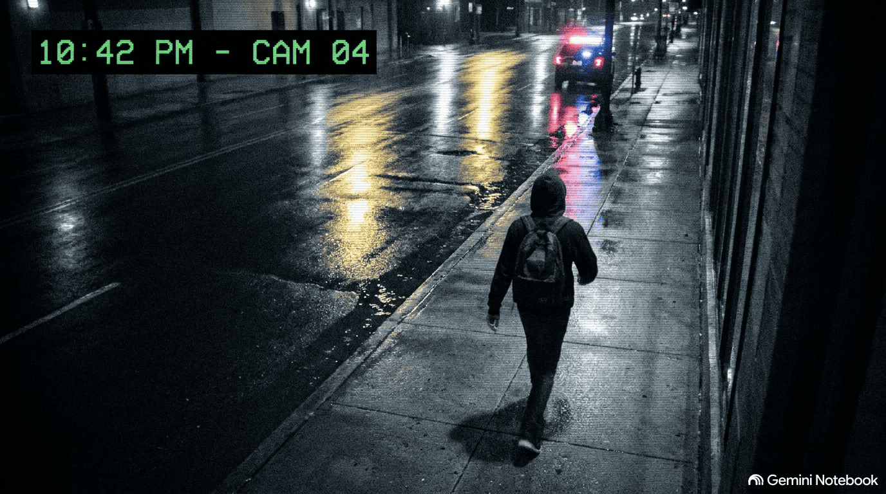

Cold All Around — DarkCry 1.0
"I want and I need to find a safe space,
Just a quiet corner to make it through the night.
Escaped from the prison that was never my place,
With nothing in my hands and terrified of the light."
< Notas
Noche 0 • 03:18 AM
Listo
Tengo frío, mucho frío. No sé qué hacer, estoy cansado, no he comido, tengo hambre, sueño, y me duele... pero no quiero pensar que fue todo mi culpa. Quizás no debí responder, quizás debí quedarme callado, no decir nada... pero ahora estoy afuera. No sé qué va a pasar mañana, pero... solo necesito aguantar un poco más, solo un poco más.
▌